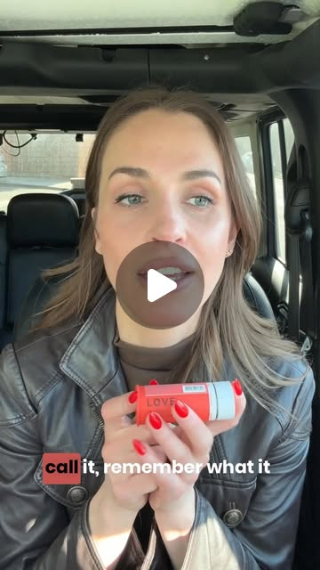

Instagram Post

What if you could enhance your special moments? The heightened arousal, the e...
video transcript (enriched by ClaudeClaw)
Summary
[CAPTION]
What if you could enhance your special moments. The heightened arousal, the enhanced sensation, the deeper connection—without performance anxiety, awkwardness, or disconnect.
[CAPTION]
What if you could enhance your special moments? The heightened arousal, the enhanced sensation, the deeper connection—without performance anxiety, awkwardness, or disconnect? Love Drops deliver exactly that in just 20 minutes. Stay completely present and connected while experiencing hours of sensual enhancement that works.
[VIDEO]
And that's the big secret of female sexuality is that it is massively narcissistic. Before you ask a woman if she will make love to a man or to another woman, ask a woman if she would make love to herself. If Esther knew about these, she would be recommending them in couple therapy as wear. After five years with my husband, I basically started just feeling like I was on autopilot in the bedroom. Like I was like a zombie. And the thing that was hard was that it wasn't because I didn't love him or that I didn't want to show him. It's just that I wasn't feeling it. Felt like it was the only thing we were fighting about, and I just was ready to give up and schedule that we need to talk conversation. So I started doing research. I mean, I'm telling you, it wasn't me. It wasn't him. It wasn't a relationship, it was circulation. It was blood flow. Apparently, as you get older, basically the circulation lessens down there. And I found these love drops. The Mura Puama in these, the Viagra of the Amazon, it is not an exaggeration. And it has a bunch of other magical ingredients in it. For the first time in three years, when my husband walked into the room, I could feel my entire body heat up. He thought I was cheating on him because I was actually initiating sex. Me initiating sex. I actually think they should call it remember what it feels like to be turned on again because that's what it does. Suddenly you remember what it feels like to be turned on. That blood flows back. Oh my lord. I don't want to say that these saved my marriage, but if you want to get back to the place where you just like want to grab your partner without it feeling forced, try these.
View original on Instagram Post →